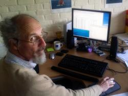

Citation : Le Site du Zéro
Bonjour Yves. Peux-tu nous expliquer ce qu'est l'Institut d'Aéronomie Spatiale de Belgique et quel est son rôle ?
Yves Christophe - L’Institut d’Aéronomie Spatiale de Belgique est un établissement scientifique de l’Etat belge, actif dans la recherche sur les aspects physico-chimiques de l’atmosphère terrestre, mais aussi martienne ou vénusienne... Les activités sont assez vastes ; cela va de la conception et la réalisation d’instruments de mesure au sol ou embarqués à bord d’engins spatiaux, l’étude et la modélisation des phénomènes dans les diverses couches de l’atmosphère (la troposphère, la stratosphère, etc...), à la mise à disposition des acteurs de l’industrie spatiale de modèles de calcul qui leur permettent de concevoir leurs appareillages, ou à celle des décideurs d’analyses et de prévisions liées à la composition chimique de l’atmosphère dont on connaît l’importance sur les grands enjeux actuels comme les changements climatiques, la couche d’ozone, etc...
L’institut travaille bien sûr en collaboration au sein de nombreux projets européens et internationaux.
http://www.youtube.com/v/X5rKnmo39IE
Évolution du trou de la couche d'ozone
Citation : Le Site du Zéro
Quel est ton poste et quelles sont tes responsabilités au sein de l'institut ?
Yves Christophe - Le personnel de l’institut compte à peu près 150 membres, dont environ 80 scientifiques, aux côtés desquels on trouve une cinquantaine d’ingénieurs et d’informaticiens. Parmi ceux-ci, je suis un Computer Scientist rattaché au département chemical weather, dont l’objet est l’analyse globale de la composition de la stratosphère. Pour cela nous utilisons des modèles informatiques, des systèmes d’assimilation de données, où les simulations des processus sont combinées à des observations par des satellites, afin de fournir l’analyse la plus fiable possible de l’état chimique de la stratosphère. Ce sont de gros programmes écrits essentiellement en FORTRAN, avec des modules développés par différentes équipes, et qui tournent sur des supercalculateurs. Il y a encore les programmes de pré-traitement de données (conversion de format, changement de référentiel, filtrage, validation) et de post-traitement de données (conversion de format, extraction, présentation et mise en forme des résultats). Dans ce cadre mon rôle consiste à maintenir et améliorer le code, notamment la parallélisation, la résilience aux erreurs, à permettre la migration vers des architectures différentes, et à développer des procédures opérationnelles et des outils de pré-traitement et post-traitement.
Yves Christophe devant son ordinateur
{kind=link}
Citation : Le Site du Zéro
En tant que Computer Scientist, quelle est ta journée type de travail ?
Yves Christophe - Nous produisons des cartes de la composition chimique stratosphérique issue d’un modèle qui tourne de manière opérationnelle tous les jours. Alors, en arrivant, en triant mon courriel, je jette un coup d’œil pour vérifier que les données d’entrée préparées par le centre météorologique européen et la NASA sont bien arrivées, que le cycle peut démarrer.
Puis je commence à travailler sur le code. Mais c’est clairement un travail d’équipe, et nous avons de fréquentes discussions.
Bien souvent aussi je donne avec plaisir à l’un ou l’autre collègue scientifique un petit conseil informatique, un coup de pouce pour écrire un script, un bout de code à réutiliser...
Citation : Le Site du Zéro
Quel a été ton parcours avant de devenir Computer Scientist ?
Yves Christophe - C’est un peu long... Si ma formation initiale est ingénieur en énergie nucléaire, je n’ai jamais exercé dans ce secteur. Ceci dit, des ingénieurs dans le domaine nucléaire, il en faudra, car ces foutues centrales, il faudra les démanteler, et tous ces déchets, il faudra les gérer, … mais c’est un autre débat.
À l’époque, on est début des années ‘80, il existait en Belgique un service militaire obligatoire, et en tant qu’objecteur de conscience, j’ai rejoint un département de recherche de la faculté des sciences appliquées de la Vrije Universiteit Brussel, qui travaillait en collaboration avec l’hôpital universitaire sur des sujets liés à l’électrocardiologie. Et puis j’y suis resté pendant une vingtaine d’années où j’ai travaillé sur divers sujets, imagerie médicale, traitement d’images... pour finir par devenir administrateur système.
Puis j’ai été sysadmin chez le fournisseur de réseau du secteur de la recherche en Belgique.
Depuis quatre ans je suis Computer Scientist à l’IASB.
{kind=link}
Citation : Le Site du Zéro
Quelles recommandations donnerais-tu aux lycéens et aux étudiants qui souhaitent devenir Computer Scientist, particulièrement dans le domaine de l'aéronomie spatiale ?
Yves Christophe - L’aéronomie spatiale peut se voir comme un domaine qui regroupe les compétences de diverses disciplines de l’ingénierie, de la physique et de la chimie. On retrouvera plus facilement des physiciens ou des ingénieurs mordus d’informatique dans ce genre de fonction. Ce sont donc d’abord les filières d’étude qui mènent à ces métiers que je recommanderais.
Je ne connais pas les détails des études supérieures en France, universités versus hautes écoles, etc.. tout ceci varie un peu d’un pays à l’autre.
Mais il faut se rendre compte que dans tous les instituts de recherche, les chercheurs sont le plus souvent engagés dans le cadre de projets, et le plus souvent avec des financements à durée limitée, et que l’on parle ici surtout de diplômés ayant un doctorat ou qui s’engagent à l’obtenir, et ceux qui sont passés par là savent que décrocher une thèse de doctorat exige pas mal d’efforts et de persévérance. Ce qui implique que si vous voulez rapidement gagner très bien votre vie, ou si vous rêvez d’un emploi stable, ou si vous pensez travailler en mesurant vos efforts... mieux vaut envisager autre chose !
Il y a aussi des aspects plus spécifiquement orientés vers les technologies de l’information. Certaines de nos activités de recherche font appel à des techniques de modélisation assez gourmandes en ressources (puissance de calcul, taille des données en mémoire). Nous avons donc besoin de spécialistes en HPC, pour optimiser l’usage des ressources en fonction du fait que les supercalculateurs sont souvent partagés entre plusieurs projets et plusieurs unités de recherche, et qu’il peut aussi exister des contraintes opérationnelles liées aux projets qui sont engagés à fournir des données en quasi temps réel.
Enfin, par essence, la recherche est exploratoire et à moins de s’étioler elle doit pouvoir s’ouvrir sur des approches nouvelles. C’est pourquoi des spécialistes dans d’autres disciplines, des mathématiciens par exemple, sont parfois les bienvenus pour étoffer une équipe.
Citation : Le Site du Zéro
Enfin, quels conseils donnerais-tu aux personnes en recherche d’un emploi ?
Yves Christophe - Voilà une question bien plus difficile. Il ne faut pas se leurrer, la société se complexifie, on attend tout à la fois plus de polyvalence et des capacités plus pointues, la connaissance des langues étrangères... Dans ce contexte, un mot d'ordre : rester curieux, s’informer, apprendre.
L’emploi stable devient aussi de plus en plus caduc ; si autrefois la grosse boîte ou l’administration étaient à peu près gage de stabilité, ce sera de moins en moins le cas ; et donc il faut se préparer au changement, ne pas le vivre comme une épreuve, mais comme une opportunité.
D’une façon générale, avant de postuler pour un emploi, se renseigner sur son futur employeur, ses domaines d’activités, ses stratégies, sa structure... et rédiger une lettre de motivation et son CV en tenant compte de cela.
Et si on décroche un entretien, s’y préparer en anticipant les questions, en sachant que dire pour mettre en avant ses qualités. Ne jamais tricher, ni fanfaronner, mais être convaincant ; et pour être convaincant, mieux vaut être convaincu. Ne pas hésiter à poser des questions.